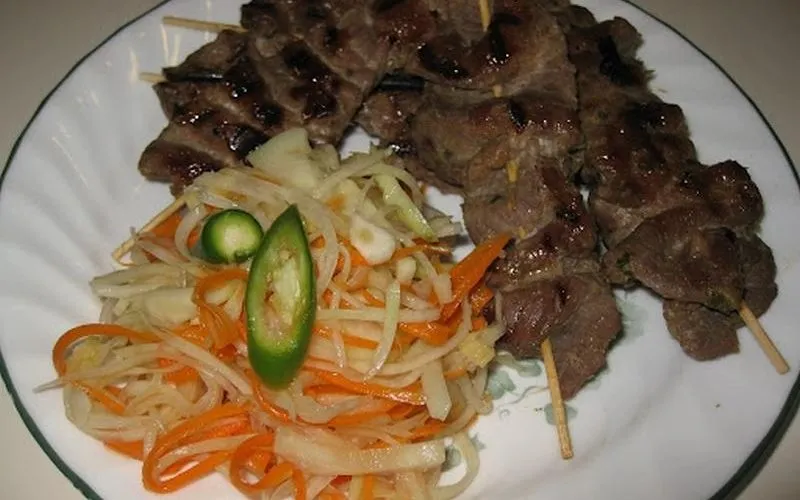

Beef Skewers
Skip to Recipe

Commonly sold by street food vendors, thinly sliced beef impaled with skewers
is a popular dish in Cambodia. It is flavored with a paste made from lemongrass
and other ingredients and is fast to cook after marinating overnight.
Recipe
Ingredients
- 2lbs of thinly sliced beef
- 3 tablespoons of water
- 2 tablespoons of palm sugar
- 3 tablespoons of oyster sauce
- 2 tablespoons of fish sauce
- 1/2 a cup of minced lemongrass
- 1 tablespoon of galangal
- 4 cloves of garlic
- 2-3 shredded kaffir lime leaves
- 3 tablespoons of vegetable oil
- 1 tablespoon of crushed red chili peppers
- 1/4 a cup of crushed peanuts
- 1 tablespoon of lemon juice
- 1/4 a tablespoon of tumeric
- 1/4 a tablespoon of paprika
Instructions
-
Grind the lemongrass, garlic, galangal, kaffir lime leaves,
and tumeric into a paste.
- Marinate the beef with the paste overnight.
- Soak skewers in water for 30 minutes before using.
- Thread the beef through the skewers and grill until fully cooked.
Source: cambodiarecipe.com
Return to Main Page